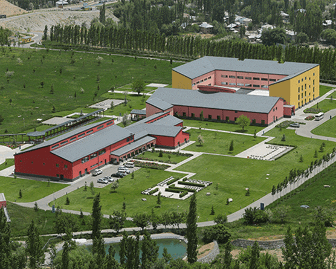

The University of Central Asia (UCA) was founded in 2000 as a private, not for profit, secular university through an International Treaty signed by the Presidents of Tajikistan, Kyrgyzstan and Kazakhstan, and His Highness the Aga Khan; ratified by their respective parliaments, and registered with the United Nations.
The Graduate School of Development (GSD) is the home for multidisciplinary research on Central Asia's social, economic, and cultural development. GSD is comprised of five entities, each of which has achieved a significant presence in the Central Asian knowledge landscape. They have forged regional networks of universities, researchers, and communities of practice and established international collaborations. With over 150 publications on its website available for free download, GSD is a singular storehouse of knowledge.